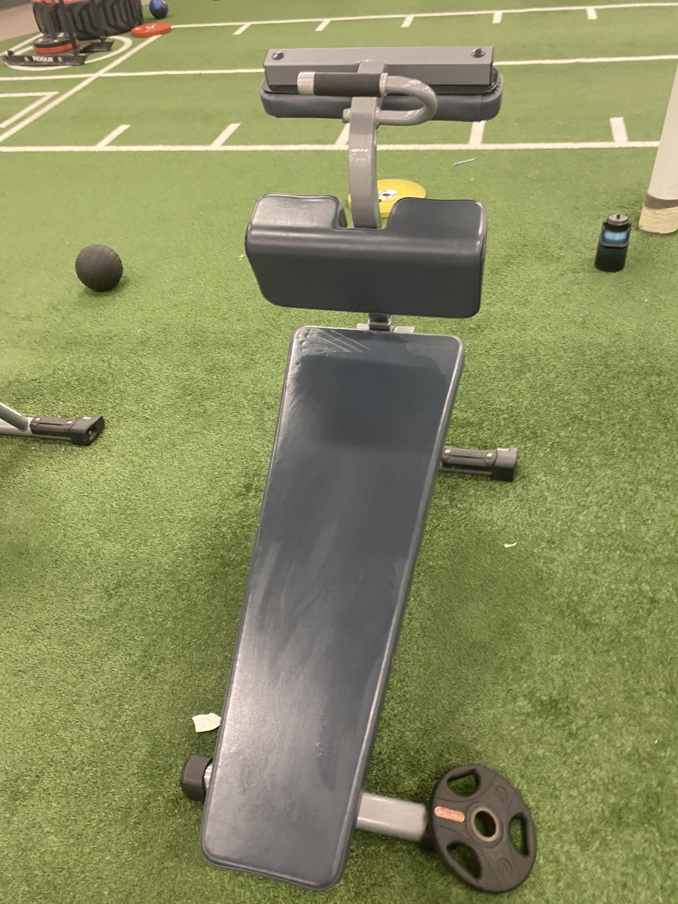

Visual Essay
A Day In An Upper Body Routine
This visual essay follows one upper-body day from the moment I walk in with a plan to the point where that plan has to adjust.
On upper day I usually walk in with a simple plan already in mind: start with incline bench, move through the rest of the routine, and end the session with a stop at the juice bar. That sounds ordinary, but that is exactly why it works as a visual essay. Bodybuilding is not only made of dramatic personal records. It is also built out of repeatable days like this one, where a routine succeeds because it can survive small problems.
My current training split follows an upper / lower / rest pattern. I like it because it is efficient and realistic for my schedule. When time is limited, I still get to train the full body often enough, recover between sessions, and keep progress moving without trying to live in the gym. For non-lifters, that is one of the first things worth understanding about a good routine: it should fit your life closely enough that you can repeat it. A routine is not good because it looks intense on paper. It is good when it gives each major area enough attention and leaves room for recovery.
This page fits the site by showing how the equipment, habits, and gym spaces work together in one actual routine.
Starting The Routine
Before the first lift, there is always a small ritual that makes the gym feel like the gym. On this day that ritual started with Gorilla Mode Watermelon. Pre-workout is not magic, and it does not replace sleep, food, or consistency, but it does mark the beginning of the session. For me it works like a switch into workout mode.

My first real station is incline bench, and that choice is deliberate. A good starting lift should be important, repeatable, and worth doing while you are freshest. Incline bench checks all three boxes for me. It hits upper chest, front delts, and triceps, but more importantly it asks for concentration, which gives the session a clear direction right away.
For novice readers, this is one of the most useful places to slow down. What makes a good starting lift is not that it looks impressive. It is that the exercise is stable enough to measure over time and important enough to deserve your freshest effort. Before I unrack the first set, I pay attention to even hand placement, shoulder position, breathing, and whether I am creating enough tension to keep the rep path consistent. I want to put my best energy into form first, not ego first. That is also why progressive overload matters here.
Adjusting Through The Workout
After incline bench, upper day shifts from opening strength into building volume. This is the point where the session becomes less about one spotlight lift and more about covering the upper body intelligently. My planned sequence for the day is preacher curl, lat pulldown, shoulder press, chest fly, and cable fly. That order is not sacred, but each exercise has a role. The preacher curl gives direct arm work without much cheating. The lat pulldown balances pressing with pulling. Shoulder press keeps overhead work in the session. Fly variations add chest volume after the heavier pressing is already done.

The preacher curl is one of the clearest examples of bodybuilding patience. It strips away momentum and asks the biceps to do the work without turning the whole set into a swing. For a beginner, that matters because not every useful lift needs to feel explosive.

From there the session moves into the lat pulldown. After a press and a curl, pulling work changes the feeling of the day. It reminds me that an upper routine should not become chest-and-arms only. A good pulldown also teaches another useful beginner lesson: different exercises ask for different kinds of attention. Here I think more about grip width, torso angle, and whether I am pulling through the back rather than just yanking with the arms. Readers who want a basic exercise reference can look at this lat pulldown form guide.

This is where the day stops being a perfect plan and starts feeling real. I expected to move into shoulder press next, but the machine was taken. For a newer lifter that can feel like the routine has been interrupted or ruined, especially if the order was written down in advance. What I actually weigh in that moment is simple: should I wait, should I substitute, or should I just swap the order and keep going? On this day the best choice was to keep the session moving and come back later.
That decision is a small one, but it is one of the most educational moments in the whole essay. A good routine is structured, but it is not fragile.

Chest fly becomes the next move while I wait out the occupied shoulder press. This is the kind of swap that keeps the session practical. Fly work is not the headline lift of the day, but it adds chest volume and lets me keep progressing instead of freezing the routine around one delay.

By the time I reach the cable station, the workout feels less like a strict list and more like a conversation with the room. Cable fly finishes the chest work while still letting me focus on stretch, control, and rep quality. That is the lesson I would want a novice reader to keep: adapt without abandoning the purpose of the day.
Closing And Recovery
The ending I expected was simple. After the workout I planned to stop by the juice bar, grab something quick, and let that be the clear end of the session. That little routine matters because endings matter. A shake, snack, or short reset makes the workout feel complete and ties training back to recovery. Nutrition does not need to be treated like a magic trick, but getting enough protein through the day does support muscle gain and recovery. A beginner-friendly source on that is this protein intake guide from Healthline.

But the juice bar was closed. That could have been a flat ending, except it turned out to be the right final lesson for the day. Just like the occupied machine earlier, it forced a small adjustment. The planned finish disappeared, so instead of leaving irritated, I ended in the sauna. That changed the ending from quick reward to quiet decompression.
A successful upper day is not one where every detail goes perfectly. It is one where the structure is good enough that the day still works when small things go wrong.
Coda: What Upper Day Shows
This upper-body routine should leave readers with a clear picture of what an upper day actually is. It is a sequence of decisions about exercise order, energy, setup, substitutions, and recovery. The split works for me because it is efficient and repeatable. The first lift matters because it uses the freshest attention. The adjustments matter because real gym sessions are never as neat as a typed list.
The day did not end exactly the way it was supposed to. The shoulder press did not arrive in the expected place, the juice bar did not stay open, and the final scene turned into the sauna instead. But the routine still succeeded because the structure was sound. That is probably the most useful lesson for a novice lifter: perfection is not the goal. Repeatability is.